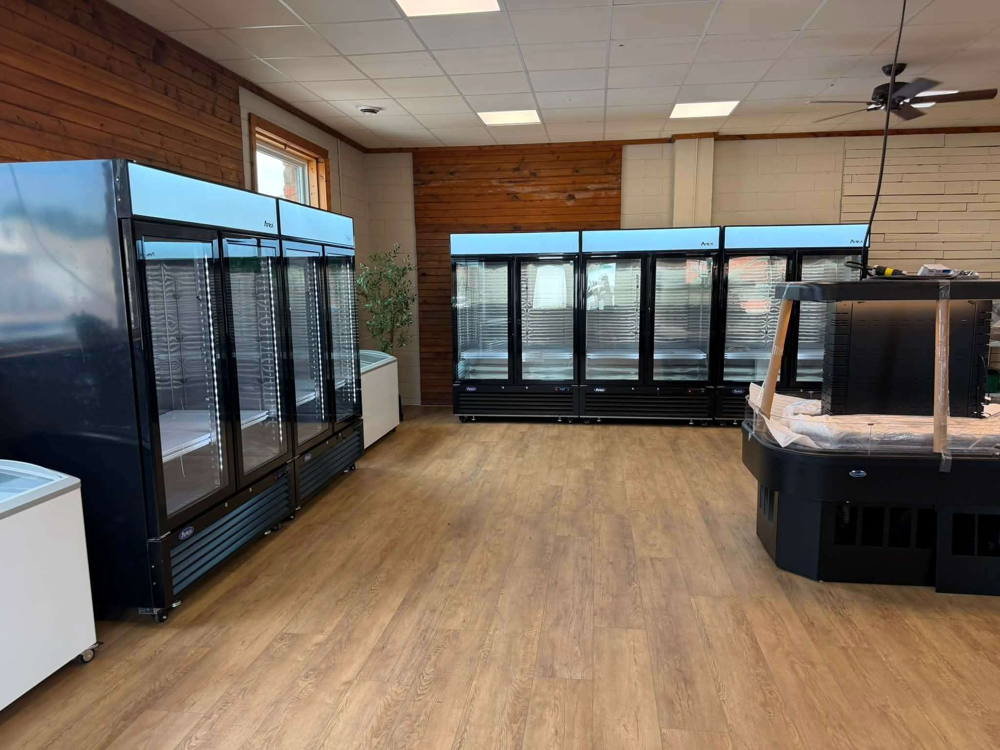
Hand-Cut in Amery
Steaks, chops, roasts, and specialty cuts hand-cut at our sister store Amery Meat Market — aged 30 days and packaged fresh for our Spooner counter.
We're the Lutz family's shop on Ash Street — right off Hwy 63 between Minneapolis and Duluth. Wisconsin cheese, curated wine, hand-selected cuts from our sister store Amery Meat Market, gift baskets, and brats grilled fresh Friday through Labor Day.
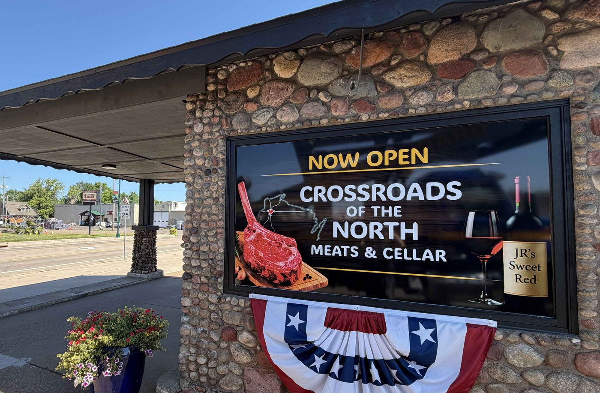
The Lutz family has been in the meat business in northwestern Wisconsin for over two decades. CRN Meats & Cellar is their new shop on Ash Street — built for slow browsing, weekend pickups, gift runs, and the kind of customer who likes to know who's behind the counter.
What We Carry
Hand-cut at our sister store Amery Meat Market, Wisconsin-sourced where we can, and aged 30 days. Walk in and you'll also find cheese, curated wine, brats grilling fresh Friday through Labor Day, and gift baskets for cabin weekends and holidays.

Steaks, chops, roasts, and specialty cuts hand-cut at our sister store Amery Meat Market — aged 30 days and packaged fresh for our Spooner counter.
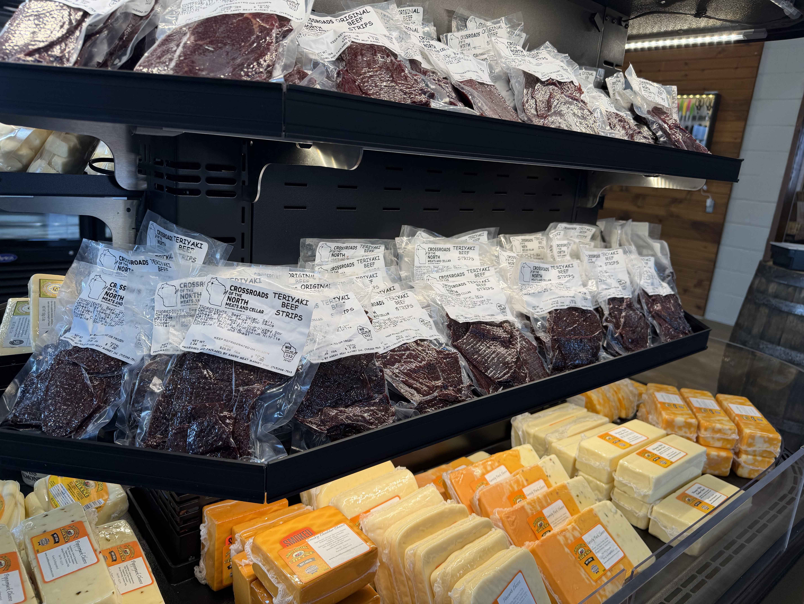
Premium dry-aged for thirty days for deep, beef-forward flavor.
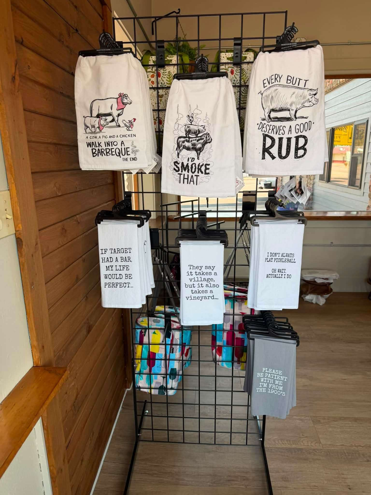
Amery's family recipes — from classic Wisconsin to house specialties. We grill them fresh in Spooner Friday through Labor Day.
Snack sticks and jerky made through our sister store Amery Meat Market. Wild game trim from your deer can be turned into snack sticks and jerky by request through Amery.
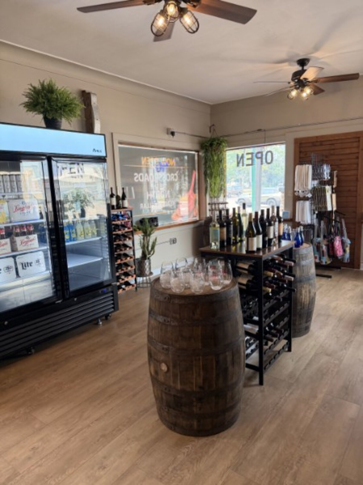
Curds, blocks, and aged specialties from cheesemakers across the state — paired with a glass at the tasting room table or boxed up to take home.
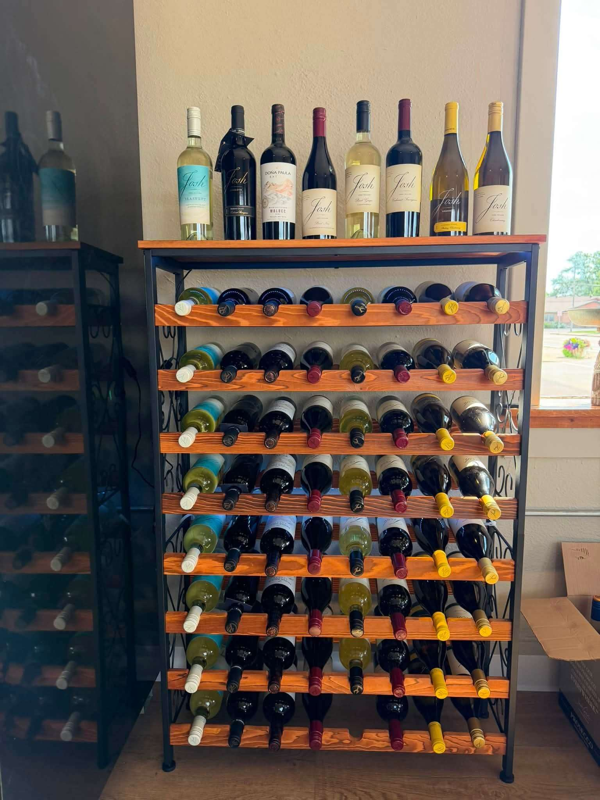
Over 60 bottles curated by Jen and Dennis — wine, craft beer, pet food, and the oddball gifts you'd only find in a town that knows what a cabin weekend needs.
Inside the Shop
Walk through the door and you'll find stocked coolers, a curated cellar, and a gift shelf — filled with brands we trust at home and the goods we wished someone in Spooner carried.
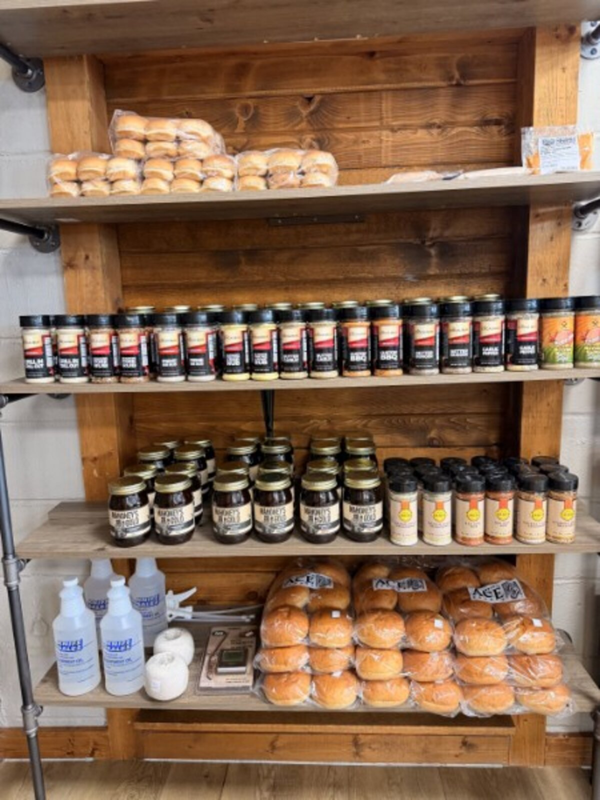
01 — Pantry & Dry Goods
Spices, honey, sauces, bread — the things a week of meals actually needs, stocked in a shop that knows what Spooner goes through in a winter.
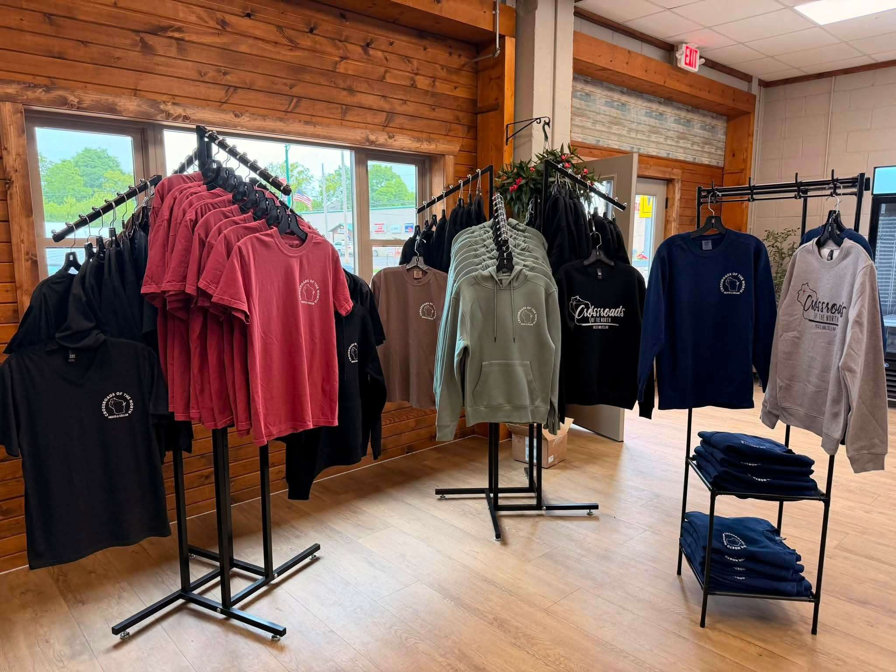
02 — The Apparel Wall
T-shirts, hoodies, and totes with the Crossroads mark — picked in colors that don't shout. Wear the shop home, or gift one to the friend who keeps asking what you brought back from Spooner.
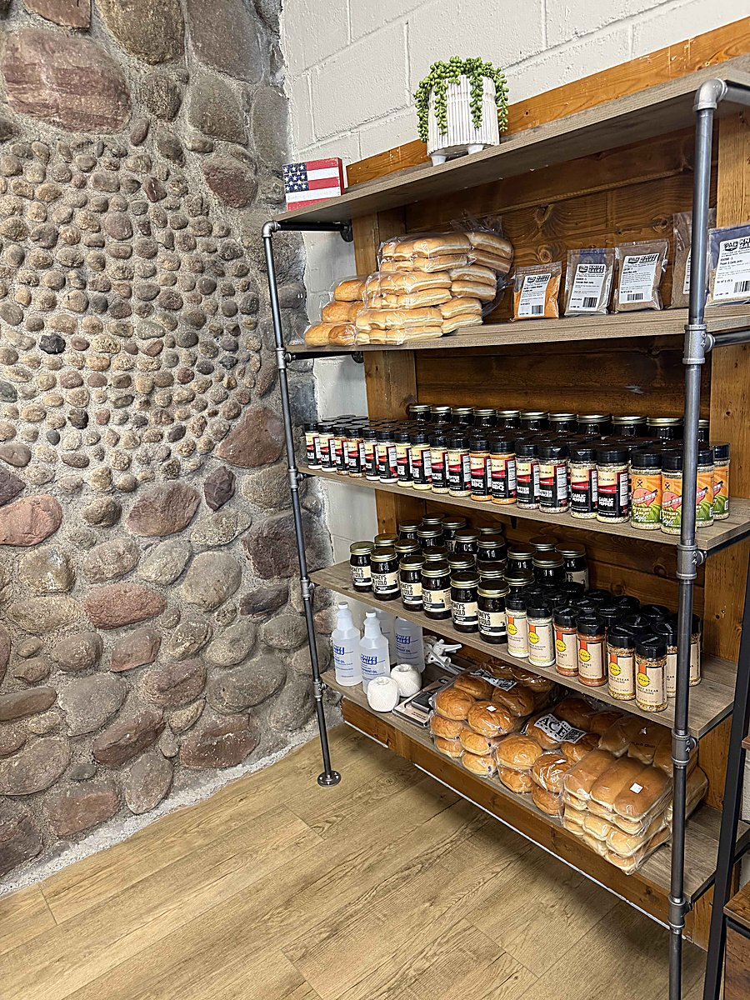
03 — Dry Goods & Condiments
BBQ sauces, hot sauces, spice rubs, honey, bread buns, and pantry staples from regional and national brands we cook with ourselves. Stocked against the fieldstone wall, between the counter and the coolers.
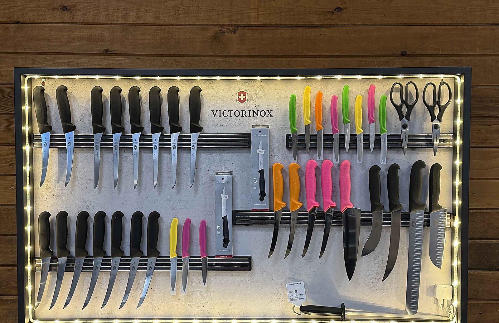
04 — Knives & Kitchen Tools
Chef knives, santokus, paring knives, bread knives, slicers, shears, and sharpening steel — the same knives the pros use, color-coded by handle, sized for real hands.
Bundles & Built-to-Order
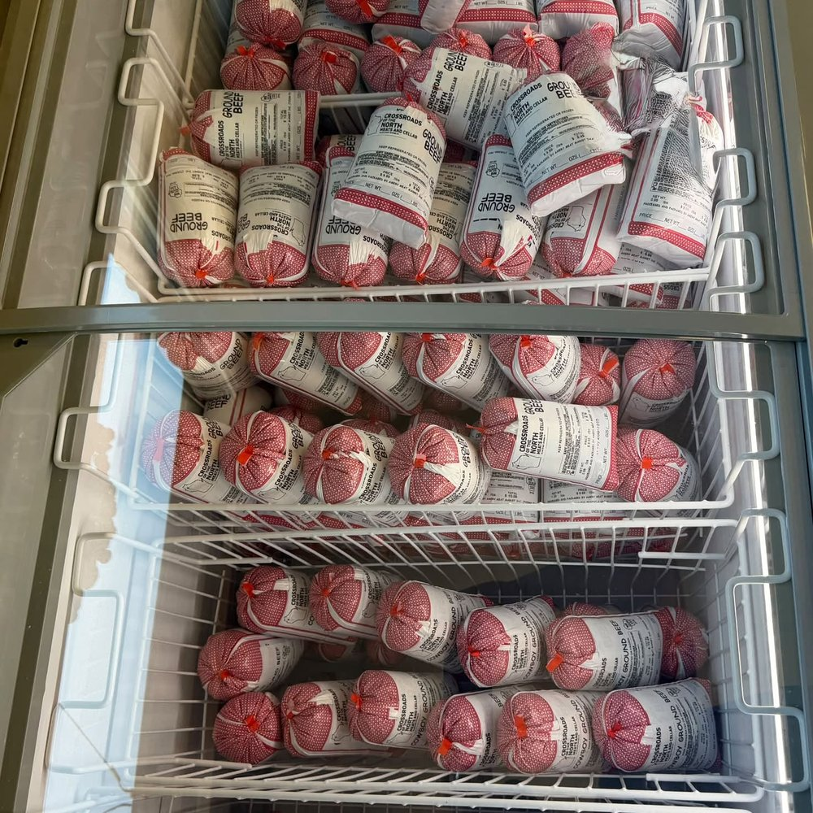
Steaks, roasts, and ground beef from our sister store Amery Meat Market — bundled for stocking the freezer. Bulk pork packages and custom meat bundles also available — ask in-store or message us for current cuts.
Message us about this bundleWisconsin cheese, Amery-made jerky and snack sticks, and curated bottles from our cellar. Built to order for holidays, thank-you gifts, corporate, and housewarmings.
See gift basket optionsCRN Meats & Cellar is the work of the Lutz family — a family-owned shop built for a town they love. Spooner sits at the crossroads of Wisconsin's railroad history, lake country, and working farms, and that heritage runs through everything we do: hand-selected cuts sourced from our sister store Amery Meat Market, brats grilled fresh Friday through Labor Day, and a curated cellar picked with care.
We're putting the finishing touches on 118 Ash Street, right in the heart of downtown. Our plan is simple — bring back the kind of local meat market and corner store where you know who's behind the counter, where we grill Amery's brats fresh Friday through Labor Day, and where the cheese and wine were chosen by someone who actually tried them.
The Lutz family is committed to being hands-on partners with their team and their community. They can't wait to open the doors and welcome you in.
Our sister store does the cutting — we do the bragging.
If it's not from Wisconsin, it better be from somewhere interesting.
The Lutz family is at the counter, not in a boardroom.
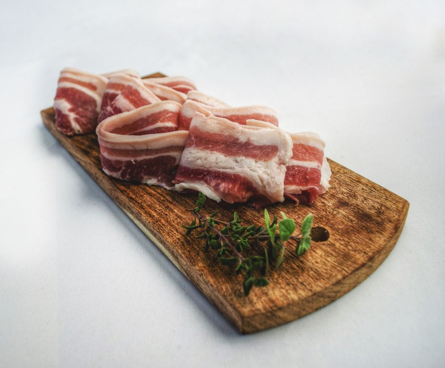
We're hands-on partners with our team and our community. We can't wait to open our doors.
Three Rooms, One Shop
Cuts from our sister store Amery Meat Market behind the counter. Wisconsin cheese on the boards. A cellar curated bottle by bottle. Here's what you'll find when you walk through the door.
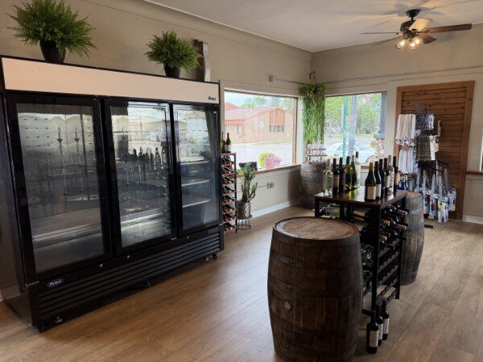
01 — The Cellar
Wines chosen for weeknight dinners and special occasions, plus a tight craft-beer shelf. Every label was tasted and approved by the Lutz family.
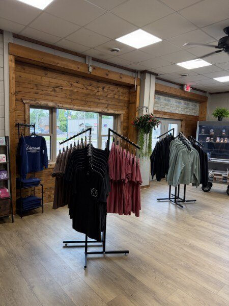
02 — The Apparel Rack
Soft-tees, hoodies, and crewnecks with the Crossroads of the North mark. Designed for the drive home, the cookout, and the cabin weekend.
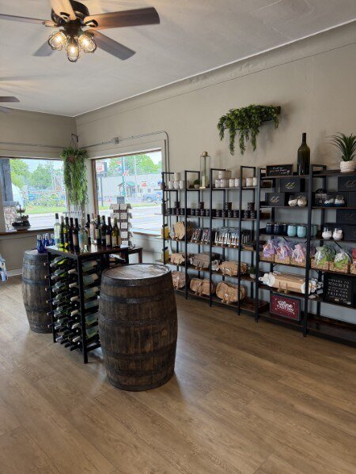
03 — The Floor
A whiskey-barrel table, rolling racks, and a storefront window that pours in northern-Wisconsin light. The shop is laid out so you can take your time.
Inside the Shop
Shots from around the shop — the coolers, the Cellar, the apparel racks, the products. Stop in during our open hours (Thu – Sun, 10 AM – 6 PM) and see the rest in person.
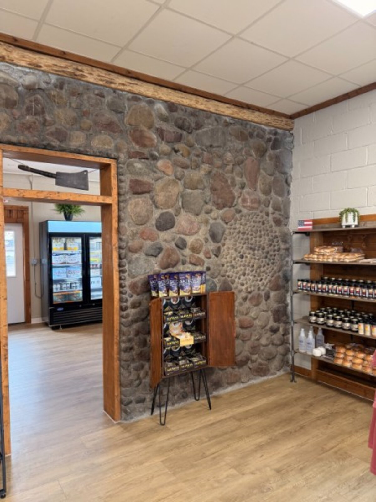
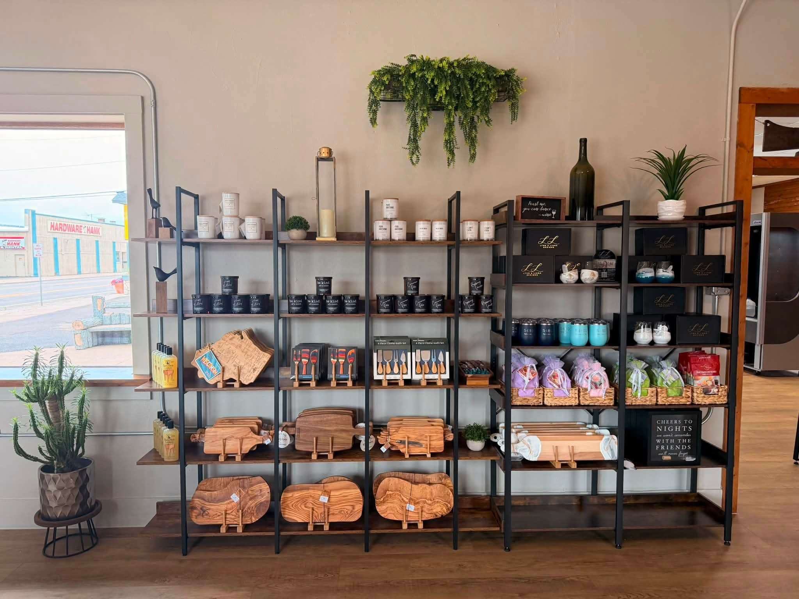
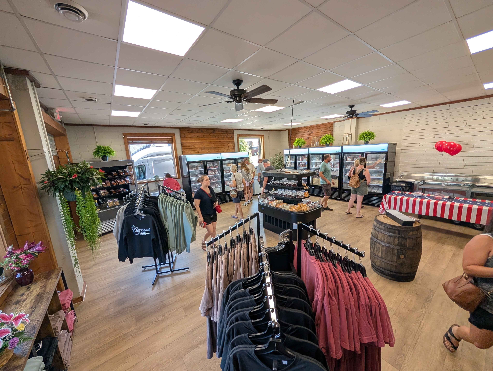
Special thanks to Tim, and Shoreline Designs at Two Harbors High School, for the merchandise rack setup.
Now Hiring — Team
If you can lift a brisket, smile at strangers, and explain to a Wisconsinite why their cheese needs to be sharper — we should talk. Full job descriptions, schedules, and apply instructions live on the hiring page.
We're hands-on partners with our team and our community. If that sounds like you, we want to hear from you.
— The Lutz Family
Word of Mouth
We've opened at 118 Ash Street. If you've stopped in, we'd love to hear from you — find us on Google and leave a review.
We've got a 5-star start — and we'd love to keep it that way. If you've visited, drop a note on our Google Business Profile and help us grow.
Questions
A Little Humor
Dennis tries to bring the same humor to the website that he brings to our social posts — pressed for material, but we obliged. Brisket the ice.
Visit Us
We're right in the heart of downtown Spooner — easy to find, easy to park.
118 Ash Street
Spooner, WI 54801
Thursday – Sunday
10 AM – 6 PM
Closed Monday – Wednesday (we have to eat too)
The fastest way to reach us right now is Facebook Messenger. Or call (715) 416-0989. We'll be at the counter soon.
Follow us on Facebook for opening day announcements, new brat flavors, and what's on the smoker.